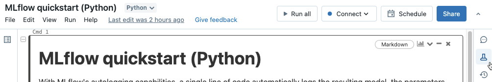
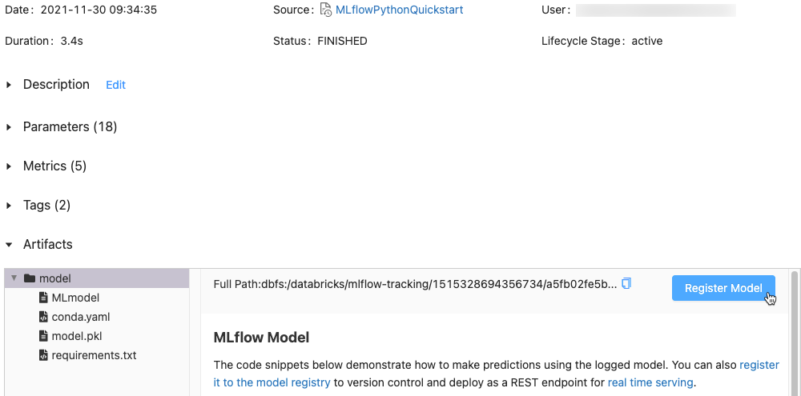
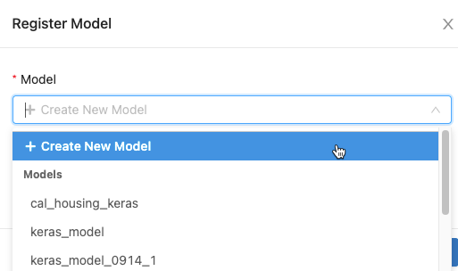
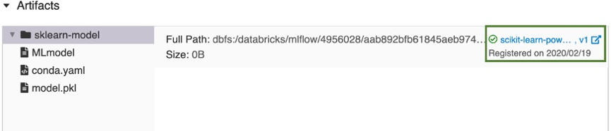
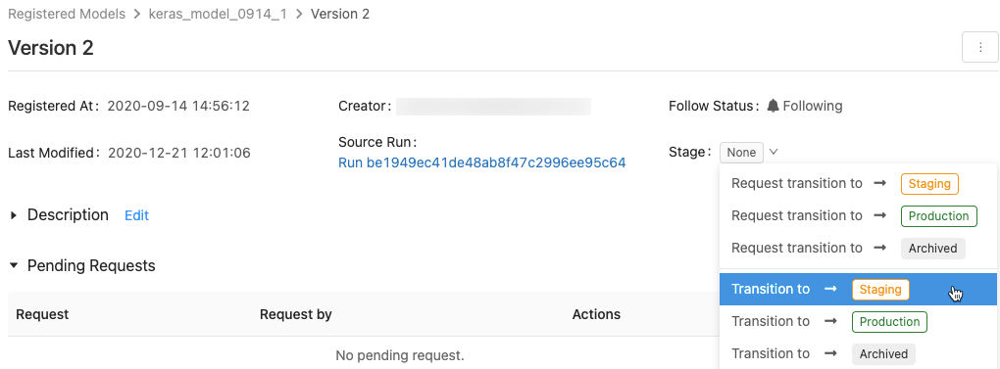
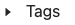
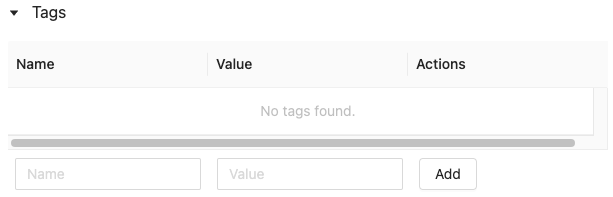
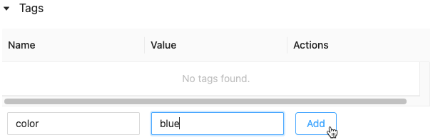
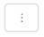

Manage model lifecycle using the Workspace Model Registry
Important
This documentation covers the Workspace Model Registry. If your workspace is enabled for Unity Catalog, do not use the procedures on this page. Instead, see Models in Unity Catalog.
Workspace Model Registry will be deprecated in the future. For guidance on how to upgrade from the Workspace Model Registry to Unity Catalog, see Migrate workflows and models to Unity Catalog.
Starting in November 2023, Databricks automatically enabled Unity Catalog for new workspaces. In such workspaces, on clusters running Databricks Runtime 13.3 LTS and above, models are automatically created in and loaded from Unity Catalog. To use the Workspace Model Registry in this case, you must explicitly target it by running import mlflow; mlflow.set_registry_uri("databricks") at the start of your workload. For other Databricks Runtime versions, there is no change in behavior.
This article describes how to use the Workspace Model Registry as part of your machine learning workflow to manage the full lifecycle of ML models. The Workspace Model Registry is a Databricks-provided, hosted version of the MLflow Model Registry.
The Workspace Model Registry provides:
Chronological model lineage (which MLflow experiment and run produced the model at a given time).
Model versioning.
Stage transitions (for example, from staging to production or archived).
Webhooks so you can automatically trigger actions based on registry events.
Email notifications of model events.
You can also create and view model descriptions and leave comments.
This article includes instructions for both the Workspace Model Registry UI and the Workspace Model Registry API.
For an overview of Workspace Model Registry concepts, see MLflow guide.
Create or register a model
You can create or register a model using the UI, or register a model using the API.
Create or register a model using the UI
There are two ways to register a model in the Workspace Model Registry. You can register an existing model that has been logged to MLflow, or you can create and register a new, empty model and then assign a previously logged model to it.
Register an existing logged model from a notebook
In the Workspace, identify the MLflow run containing the model you want to register.
Click the Experiment icon in the notebook’s right sidebar.
In the Experiment Runs sidebar, click the icon next to the date of the run. The MLflow Run page displays. This page shows details of the run including parameters, metrics, tags, and list of artifacts.
In the Artifacts section, click the directory named xxx-model.
Click the Register Model button at the far right.
In the dialog, click in the Model box and do one of the following:
Select Create New Model from the drop-down menu. The Model Name field appears. Enter a model name, for example
scikit-learn-power-forecasting.Select an existing model from the drop-down menu.
Click Register.
If you selected Create New Model, this registers a model named
scikit-learn-power-forecasting, copies the model into a secure location managed by the Workspace Model Registry, and creates a new version of the model.If you selected an existing model, this registers a new version of the selected model.
After a few moments, the Register Model button changes to a link to the new registered model version.
Click the link to open the new model version in the Workspace Model Registry UI. You can also find the model in the Workspace Model Registry by clicking Models in the sidebar.
Create a new registered model and assign a logged model to it
You can use the Create Model button on the registered models page to create a new, empty model and then assign a logged model to it. Follow these steps:
On the registered models page, click Create Model. Enter a name for the model and click Create.
Follow Steps 1 through 3 in Register an existing logged model from a notebook.
In the Register Model dialog, select the name of the model you created in Step 1 and click Register. This registers a model with the name you created, copies the model into a secure location managed by the Workspace Model Registry, and creates a model version:
Version 1.After a few moments, the MLflow Run UI replaces the Register Model button with a link to the new registered model version. You can now select the model from the Model drop-down list in the Register Model dialog on the Experiment Runs page. You can also register new versions of the model by specifying its name in API commands like Create ModelVersion.
Register a model using the API
There are three programmatic ways to register a model in the Workspace Model Registry. All methods copy the model into a secure location managed by the Workspace Model Registry.
To log a model and register it with the specified name during an MLflow experiment, use the
mlflow.<model-flavor>.log_model(...)method. If a registered model with the name doesn’t exist, the method registers a new model, creates Version 1, and returns aModelVersionMLflow object. If a registered model with the name exists already, the method creates a new model version and returns the version object.with mlflow.start_run(run_name=<run-name>) as run: ... mlflow.<model-flavor>.log_model(<model-flavor>=<model>, artifact_path="<model-path>", registered_model_name="<model-name>" )
To register a model with the specified name after all your experiment runs complete and you have decided which model is most suitable to add to the registry, use the
mlflow.register_model()method. For this method, you need the run ID for themlruns:URIargument. If a registered model with the name doesn’t exist, the method registers a new model, creates Version 1, and returns aModelVersionMLflow object. If a registered model with the name exists already, the method creates a new model version and returns the version object.result=mlflow.register_model("runs:<model-path>", "<model-name>")
To create a new registered model with the specified name, use the MLflow Client API
create_registered_model()method. If the model name exists, this method throws anMLflowException.client = MlflowClient() result = client.create_registered_model("<model-name>")
You can also register a model with the Databricks Terraform provider and databricks_mlflow_model.
View models in the UI
Registered models page
The registered models page displays when you click Models in the sidebar. This page shows all of the models in the registry.
You can create a new model from this page.
Also from this page, workspace administrators can set permissions for all models in the Workspace Model Registry.
Registered model page
To display the registered model page for a model, click a model name in the registered models page. The registered model page shows information about the selected model and a table with information about each version of the model. From this page, you can also:
Model version page
To view the model version page, do one of the following:
Click a version name in the Latest Version column on the registered models page.
Click a version name in the Version column in the registered model page.
This page displays information about a specific version of a registered model and also provides a link to the source run (the version of the notebook that was run to create the model). From this page, you can also:
Control access to models
To learn how to control access to models registered in the Workspace Model Registry, see Share MLflow Models.
Transition a model stage
A model version has one of the following stages: None, Staging, Production, or Archived. The Staging stage is meant for model testing and validating, while the Production stage is for model versions that have completed the testing or review processes and have been deployed to applications for live scoring. An Archived model version is assumed to be inactive, at which point you can consider deleting it. Different versions of a model can be in different stages.
A user with appropriate permission can transition a model version between stages. If you have permission to transition a model version to a particular stage, you can make the transition directly. If you do not have permission, you can request a stage transition and a user that has permission to transition model versions can approve, reject, or cancel the request.
You can transition a model stage using the UI or using the API.
Transition a model stage using the UI
Follow these instructions to transition a model’s stage.
To display the list of available model stages and your available options, in a model version page, click the drop down next to Stage: and request or select a transition to another stage.
Enter an optional comment and click OK.
Transition a model version to the Production stage
After testing and validation, you can transition or request a transition to the Production stage.
Workspace Model Registry allows more than one version of the registered model in each stage. If you want to have only one version in Production, you can transition all versions of the model currently in Production to Archived by checking Transition existing Production model versions to Archived.
Approve, reject, or cancel a model version stage transition request
A user without stage transition permission can request a stage transition. The request appears in the Pending Requests section in the model version page:
To approve, reject, or cancel a stage transition request, click the Approve, Reject, or Cancel link.
The creator of a transition request can also cancel the request.
Transition a model stage using the API
Users with appropriate permissions can transition a model version to a new stage.
To update a model version stage to a new stage, use the MLflow Client API transition_model_version_stage() method:
client = MlflowClient()
client.transition_model_version_stage(
name="<model-name>",
version=<model-version>,
stage="<stage>",
description="<description>"
)
The accepted values for <stage> are: "Staging"|"staging", "Archived"|"archived", "Production"|"production", "None"|"none".
Use model for inference
Preview
This feature is in Public Preview.
After a model is registered in the Workspace Model Registry, you can automatically generate a notebook to use the model for batch or streaming inference. Alternatively, you can create an endpoint to use the model for real-time serving with Model Serving.
In the upper-right corner of the registered model page or the model version page, click . The Configure model inference dialog appears, which allows you to configure batch, streaming, or real-time inference.
Important
Anaconda Inc. updated their terms of service for anaconda.org channels. Based on the new terms of service you may require a commercial license if you rely on Anaconda’s packaging and distribution. See Anaconda Commercial Edition FAQ for more information. Your use of any Anaconda channels is governed by their terms of service.
MLflow models logged before v1.18 (Databricks Runtime 8.3 ML or earlier) were by default logged with the conda defaults channel (https://repo.anaconda.com/pkgs/) as a dependency. Because of this license change, Databricks has stopped the use of the defaults channel for models logged using MLflow v1.18 and above. The default channel logged is now conda-forge, which points at the community managed https://conda-forge.org/.
If you logged a model before MLflow v1.18 without excluding the defaults channel from the conda environment for the model, that model may have a dependency on the defaults channel that you may not have intended.
To manually confirm whether a model has this dependency, you can examine channel value in the conda.yaml file that is packaged with the logged model. For example, a model’s conda.yaml with a defaults channel dependency may look like this:
channels:
- defaults
dependencies:
- python=3.8.8
- pip
- pip:
- mlflow
- scikit-learn==0.23.2
- cloudpickle==1.6.0
name: mlflow-env
Because Databricks can not determine whether your use of the Anaconda repository to interact with your models is permitted under your relationship with Anaconda, Databricks is not forcing its customers to make any changes. If your use of the Anaconda.com repo through the use of Databricks is permitted under Anaconda’s terms, you do not need to take any action.
If you would like to change the channel used in a model’s environment, you can re-register the model to the Workspace model registry with a new conda.yaml. You can do this by specifying the channel in the conda_env parameter of log_model().
For more information on the log_model() API, see the MLflow documentation for the model flavor you are working with, for example, log_model for scikit-learn.
For more information on conda.yaml files, see the MLflow documentation.
Configure batch inference
When you follow these steps to create a batch inference notebook, the notebook is saved in your user folder under the Batch-Inference folder in a folder with the model’s name. You can edit the notebook as needed.
Click the Batch inference tab.
From the Model version drop-down, select the model version to use. The first two items in the drop-down are the current Production and Staging version of the model (if they exist). When you select one of these options, the notebook automatically uses the Production or Staging version as of the time it is run. You do not need to update the notebook as you continue to develop the model.
Click the Browse button next to Input table. The Select input data dialog appears. If necessary, you can change the cluster in the Compute drop-down.
Note
For Unity Catalog enabled workspaces, the Select input data dialog allows you to select from three levels,
<catalog-name>.<database-name>.<table-name>.Select the table containing the input data for the model, and click Select. The generated notebook automatically imports this data and sends it to the model. You can edit the generated notebook if the data requires any transformations before it is input to the model.
Predictions are saved in a folder in the directory
dbfs:/FileStore/batch-inference. By default, predictions are saved in a folder with the same name as the model. Each run of the generated notebook writes a new file to this directory with the timestamp appended to the name. You can also choose not to include the timestamp and to overwrite the file with subsequent runs of the notebook; instructions are provided in the generated notebook.You can change the folder where the predictions are saved by typing a new folder name into the Output table location field or by clicking the folder icon to browse the directory and select a different folder.
To save predictions to a location in Unity Catalog, you must edit the notebook. For an example notebook that shows how to train a machine-learning model that uses data in Unity Catalog and write the results back to Unity Catalog, see Train and register machine learning models with Unity Catalog.
Configure streaming inference using Delta Live Tables
When you follow these steps to create a streaming inference notebook, the notebook is saved in your user folder under the DLT-Inference folder in a folder with the model’s name. You can edit the notebook as needed.
Click the Streaming (Delta Live Tables) tab.
From the Model version drop-down, select the model version to use. The first two items in the drop-down are the current Production and Staging version of the model (if they exist). When you select one of these options, the notebook automatically uses the Production or Staging version as of the time it is run. You do not need to update the notebook as you continue to develop the model.
Click the Browse button next to Input table. The Select input data dialog appears. If necessary, you can change the cluster in the Compute drop-down.
Note
For Unity Catalog enabled workspaces, the Select input data dialog allows you to select from three levels,
<catalog-name>.<database-name>.<table-name>.Select the table containing the input data for the model, and click Select. The generated notebook creates a data transform that uses the input table as a source and integrates the MLflow PySpark inference UDF to perform model predictions. You can edit the generated notebook if the data requires any additional transformations before or after the model is applied.
Provide the output Delta Live Table name. The notebook creates a live table with the given name and uses it to store the model predictions. You can modify the generated notebook to customize the target dataset as needed - for example: define a streaming live table as output, add schema information or data quality constraints.
You can then either create a new Delta Live Tables pipeline with this notebook or add it to an existing pipeline as an additional notebook library.
Configure real-time inference
Model Serving exposes your MLflow machine learning models as scalable REST API endpoints. To create a Model Serving endpoint, see Create and configure model serving endpoints.
Compare model versions
You can compare model versions in the Workspace Model Registry.
On the registered model page, select two or more model versions by clicking in the checkbox to the left of the model version.
Click Compare.
The Comparing
<N>Versions screen appears, showing a table that compares the parameters, schema, and metrics of the selected model versions. At the bottom of the screen, you can select the type of plot (scatter, contour, or parallel coordinates) and the parameters or metrics to plot.
Control notification preferences
You can configure Workspace Model Registry to notify you by email about activity on registered models and model versions that you specify.
On the registered model page, the Notify me about menu shows three options:
All new activity: Send email notifications about all activity on all model versions of this model. If you created the registered model, this setting is the default.
Activity on versions I follow: Send email notifications only about model versions you follow. With this selection, you receive notifications for all model versions that you follow; you cannot turn off notifications for a specific model version.
Mute notifications: Do not send email notifications about activity on this registered model.
The following events trigger an email notification:
Creation of a new model version
Request for a stage transition
Stage transition
New comments
You are automatically subscribed to model notifications when you do any of the following:
Comment on that model version
Transition a model version’s stage
Make a transition request for the model’s stage
To see if you are following a model version, look at the Follow Status field on the model version page, or at the table of model versions on the registered model page.
Turn off all email notifications
You can turn off email notifications in the Workspace Model Registry Settings tab of the User Settings menu:
Click your username in the upper-right corner of the Databricks workspace, and select User Settings from the drop-down menu.
In the Settings sidebar, select Notifications.
Turn off Model Registry email notifications.
An account admin can turn off email notifications for the entire organization in the admin settings page.
Maximum number of emails sent
Workspace Model Registry limits the number of emails sent to each user per day per activity. For example, if you receive 20 emails in one day about new model versions created for a registered model, Workspace Model Registry sends an email noting that the daily limit has been reached, and no additional emails about that event are sent until the next day.
To increase the limit of the number of emails allowed, contact your Databricks account team.
Webhooks
Preview
This feature is in Public Preview.
Webhooks enable you to listen for Workspace Model Registry events so your integrations can automatically trigger actions. You can use webhooks to automate and integrate your machine learning pipeline with existing CI/CD tools and workflows. For example, you can trigger CI builds when a new model version is created or notify your team members through Slack each time a model transition to production is requested.
Annotate a model or model version
You can provide information about a model or model version by annotating it. For example, you may want to include an overview of the problem or information about the methodology and algorithm used.
Annotate a model or model version using the UI
The Databricks UI provides several ways to annotate models and model versions. You can add text information using a description or comments, and you can add searchable key-value tags. Descriptions and tags are available for models and model versions; comments are only available for model versions.
Descriptions are intended to provide information about the model.
Comments provide a way to maintain an ongoing discussion about activities on a model version.
Tags let you customize model metadata to make it easier to find specific models.
Add or update the description for a model or model version
From the registered model or model version page, click Edit next to Description. An edit window appears.
Enter or edit the description in the edit window.
Click Save to save your changes or Cancel to close the window.
If you entered a description of a model version, the description appears in the Description column in the table on the registered model page. The column displays a maximum of 32 characters or one line of text, whichever is shorter.
Add comments for a model version
Scroll down the model version page and click the down arrow next to Activities.
Type your comment in the edit window and click Add Comment.
Add tags for a model or model version
From the registered model or model version page, click  if it is not already open. The tags table appears.
Click in the Name and Value fields and type the key and value for your tag.
Click Add.


Annotate a model version using the API
To update a model version description, use the MLflow Client API update_model_version() method:
client = MlflowClient()
client.update_model_version(
name="<model-name>",
version=<model-version>,
description="<description>"
)
To set or update a tag for a registered model or model version, use the MLflow Client API `set_registered_model_tag()`) or `set_model_version_tag()` method:
client = MlflowClient()
client.set_registered_model_tag()(
name="<model-name>",
key="<key-value>",
tag="<tag-value>"
)
client = MlflowClient()
client.set_model_version_tag()(
name="<model-name>",
version=<model-version>,
key="<key-value>",
tag="<tag-value>"
)
Rename a model (API only)
To rename a registered model, use the MLflow Client API rename_registered_model() method:
client=MlflowClient()
client.rename_registered_model("<model-name>", "<new-model-name>")
Note
You can rename a registered model only if it has no versions, or all versions are in the None or Archived stage.
Search for a model
You can search for models in the Workspace Model Registry using the UI or the API.
Note
When you search for a model, only models for which you have at least Can Read permissions are returned.
Search for a model using the UI
To display registered models, click Models in the sidebar.
To search for a specific model, enter text in the search box. You can enter the name of a model or any part of the name:
You can also search on tags. Enter tags in this format: tags.<key>=<value>. To search for multiple tags, use the AND operator.
You can search on both the model name and tags using the MLflow search syntax. For example:
Search for a model using the API
You can search for registered models in the Workspace Model Registry with the MLflow Client API method search_registered_models()
If you have set tags on your models, you can also search by those tags with search_registered_models().
print(f"Find registered models with a specific tag value")
for m in client.search_registered_models(f"tags.`<key-value>`='<tag-value>'"):
pprint(dict(m), indent=4)
You can also search for a specific model name and list its version details using MLflow Client API search_model_versions() method:
from pprint import pprint
client=MlflowClient()
[pprint(mv) for mv in client.search_model_versions("name='<model-name>'")]
This outputs:
{ 'creation_timestamp': 1582671933246,
'current_stage': 'Production',
'description': 'A random forest model containing 100 decision trees '
'trained in scikit-learn',
'last_updated_timestamp': 1582671960712,
'name': 'sk-learn-random-forest-reg-model',
'run_id': 'ae2cc01346de45f79a44a320aab1797b',
'source': './mlruns/0/ae2cc01346de45f79a44a320aab1797b/artifacts/sklearn-model',
'status': 'READY',
'status_message': None,
'user_id': None,
'version': 1 }
{ 'creation_timestamp': 1582671960628,
'current_stage': 'None',
'description': None,
'last_updated_timestamp': 1582671960628,
'name': 'sk-learn-random-forest-reg-model',
'run_id': 'd994f18d09c64c148e62a785052e6723',
'source': './mlruns/0/d994f18d09c64c148e62a785052e6723/artifacts/sklearn-model',
'status': 'READY',
'status_message': None,
'user_id': None,
'version': 2 }
Delete a model or model version
You can delete a model using the UI or the API.
Delete a model version or model using the UI
Warning
You cannot undo this action. You can transition a model version to the Archived stage rather than deleting it from the registry. When you delete a model, all model artifacts stored by the Workspace Model Registry and all the metadata associated with the registered model are deleted.
Note
You can only delete models and model versions in the None or Archived stage. If a registered model has versions in the Staging or Production stage, you must transition them to either the None or Archived stage before deleting the model.
To delete a model version:
Click Models in the sidebar.
Click a model name.
Click a model version.
Click  at the upper right corner of the screen and select Delete from the drop-down menu.
To delete a model:
Click Models in the sidebar.
Click a model name.
Click at the upper right corner of the screen and select Delete from the drop-down menu.
Delete a model version or model using the API
Warning
You cannot undo this action. You can transition a model version to the Archived stage rather than deleting it from the registry. When you delete a model, all model artifacts stored by the Workspace Model Registry and all the metadata associated with the registered model are deleted.
Note
You can only delete models and model versions in the None or Archived stage. If a registered model has versions in the Staging or Production stage, you must transition them to either the None or Archived stage before deleting the model.
Copy MLflow objects between workspaces
To import or export MLflow objects to or from your Databricks workspace, you can use the community-driven open source project MLflow Export-Import to migrate MLflow experiments, models, and runs between workspaces.
With these tools, you can:
Share and collaborate with other data scientists in the same or another tracking server. For example, you can clone an experiment from another user into your workspace.
Copy a model from one workspace to another, such as from a development to a production workspace.
Copy MLflow experiments and runs from your local tracking server to your Databricks workspace.
Back up mission critical experiments and models to another Databricks workspace.